1. Что главное в этом ивенте
По текущим вкладкам событие состоит из нескольких частей: Парк пингвинов — основной источник пингвиньих монет, Профи вечеринок — этапная шкала, Ледяной взрыв — отдельный блок с ежедневными заданиями и удвоением наград по пропуску, Фантазийная симфония — пазл с побочными наградами, Потерянная добыча — режим с лопатами, а Пингвиний магазин — место, где всё это в итоге тратится.
Практически вся экономика крутится вокруг двух вещей: сколько шариков вы получите и сколько монет в среднем вынесете из Парка пингвинов. Отсюда и все решения по донату, приоритетам и темпу игры.
70,4 монеты за 1 шарик — это рабочая опорная величина для всего ивента. Именно от неё удобно считать и выгоду пропуска, и ценность этапов, и общий ожидаемый результат.
2. Парк пингвинов: средние монеты и волшебные кольца
Это центральная вкладка. Мы тратим ледяные шарики, запускаем их сверху и получаем пингвиньи монеты. По скрину с шансами базовые исходы такие: 10 монет — 48%, 70 — 28%, 130 — 20%, 500 — 4%.
| Источник / сценарий | Шарики | Средние монеты | Комментарий |
|---|---|---|---|
| Профи вечеринок за 7 дней | 35 | ≈ 2 464 | По 5 шариков в день — стабильный бесплатный костяк. |
| Ориентир F2P за весь ивент | ≈ 85 | ≈ 5 984 | Порядок величины при регулярной игре и сборе наград. |
| Бонус от пропуска 479 ₽ | +21 | ≈ +1 478 | Только за удвоение 3 шариков в день в Ледяном взрыве. |
| Потеря от одного пропущенного дня | -3 | ≈ -211 | Поздняя покупка пропуска режет его реальную ценность. |
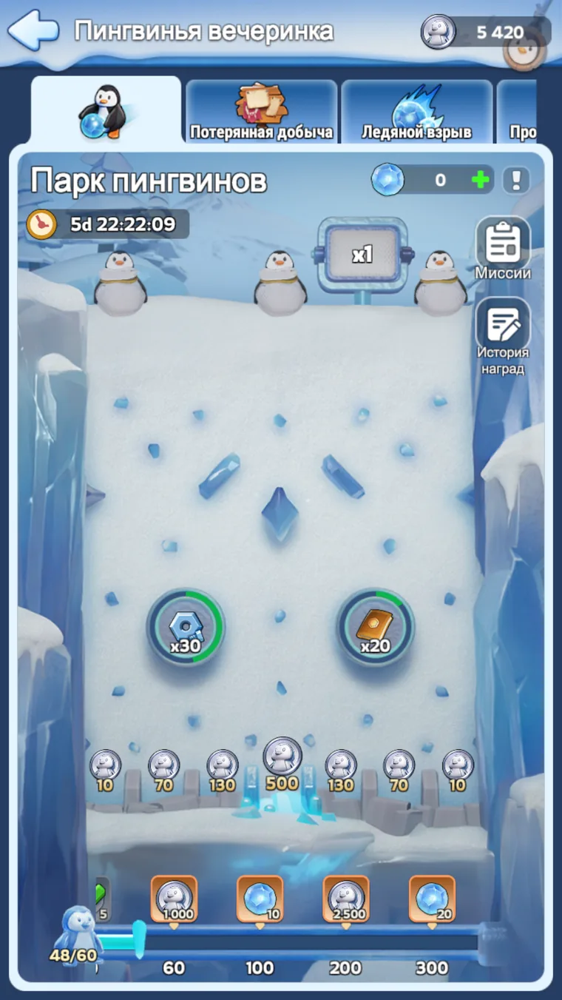
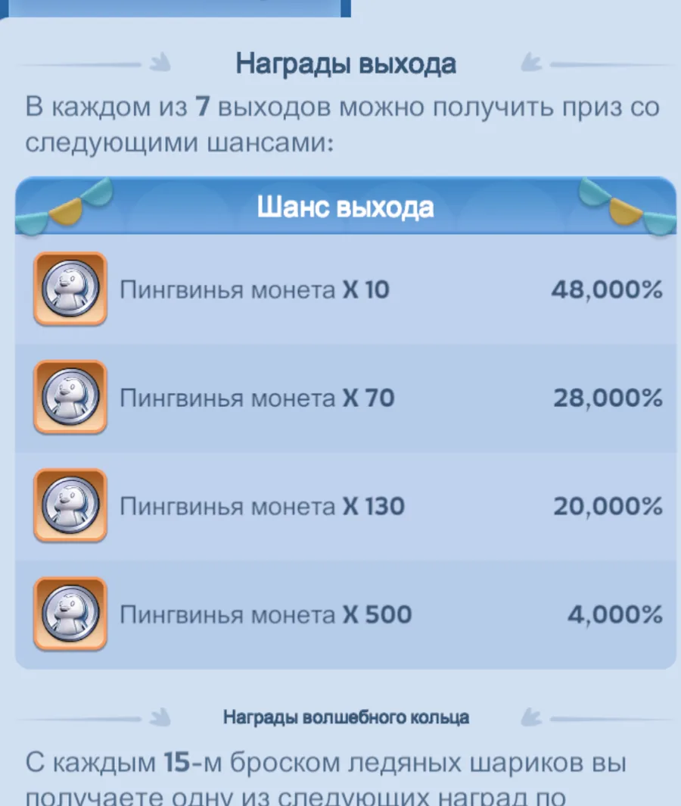
Каждый 15-й бросок даёт награду из волшебного кольца. Это важный бонус к монетам: цепочки фиксированные, поэтому их стоит просто держать перед глазами, а не пытаться «угадывать удачу».
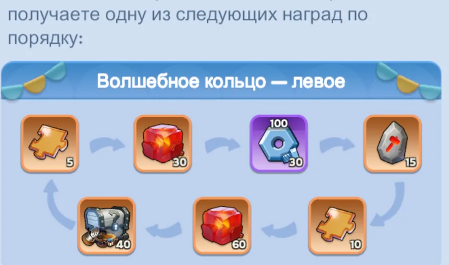
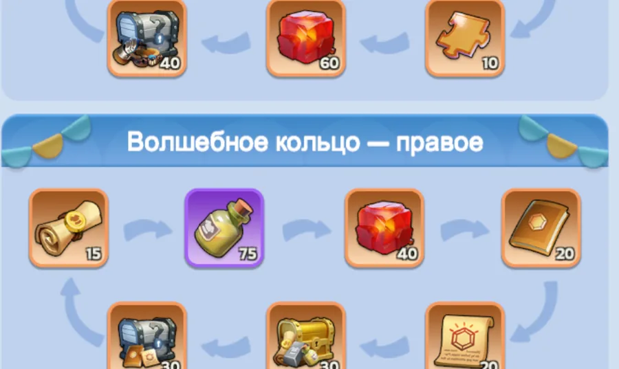
3. Ледяной взрыв и пропуск за 479 ₽
Пропуск за 479 ₽ усиливает вкладку «Ледяной взрыв». Для математики события главное, что он удваивает ежедневные награды этого блока и даёт +3 ледяных шарика в день.
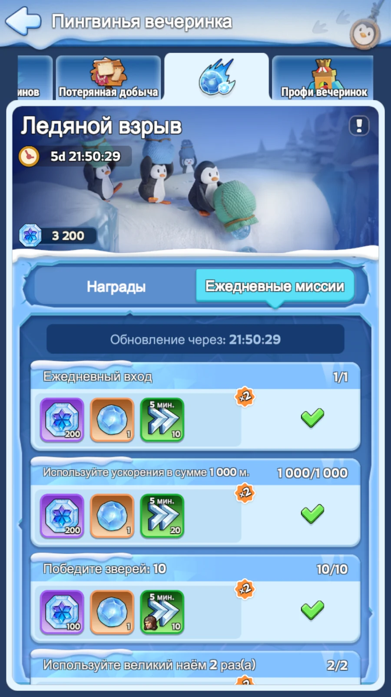
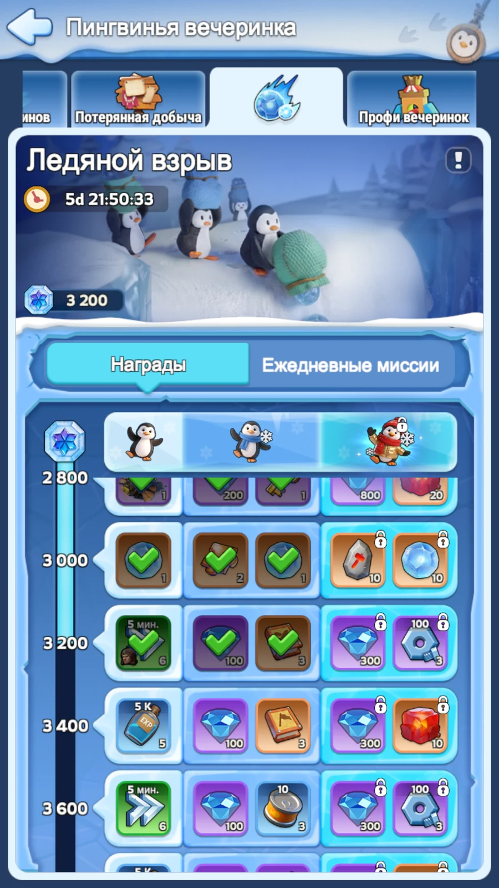
Что именно удваивается
Главное для математики монет — 3 ледяных шарика в день. Поверх этого удваиваются и ежедневные награды Ледяного взрыва в виде прочих ресурсов, но они уже не считаются напрямую в пингвиньих монетах.
Что с «Профи вечеринок»
Профи вечеринок — это отдельная этапная шкала события со своими наградами за очки. Для расчёта выгоды пропуска ориентируемся именно на ежедневные шарики из Ледяного взрыва.
Это даёт удвоение ежедневных наград во вкладке Ледяной взрыв и работает с самого старта события.
Расчёт идёт по среднему значению 70,4 пингвиньих монеты за один шарик.
Каждый пропущенный день срезает часть выгоды, и это ещё без учёта остальных удвоенных ресурсов Ледяного взрыва.
Практический вывод простой: если вы вообще собирались брать этот пропуск, то покупать его надо в самом начале события. Тогда вы забираете и все дополнительные шарики, и полный объём удвоенных ежедневных наград.
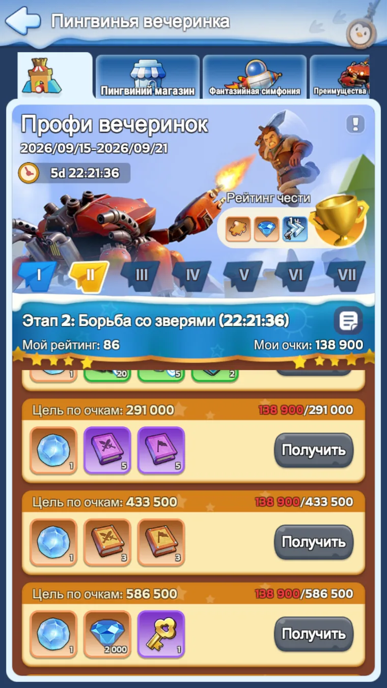
4. Потерянная добыча: ответственный за лопату
Эта вкладка открывается на 2-й день. Здесь важно не копать наугад. Игра показывает силуэты оставшихся предметов, форму поля и уже выкопанные области — этого достаточно, чтобы сильно сократить количество пустых нажатий.
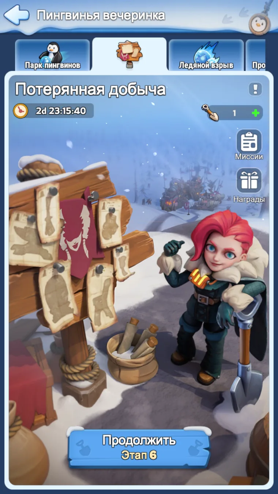
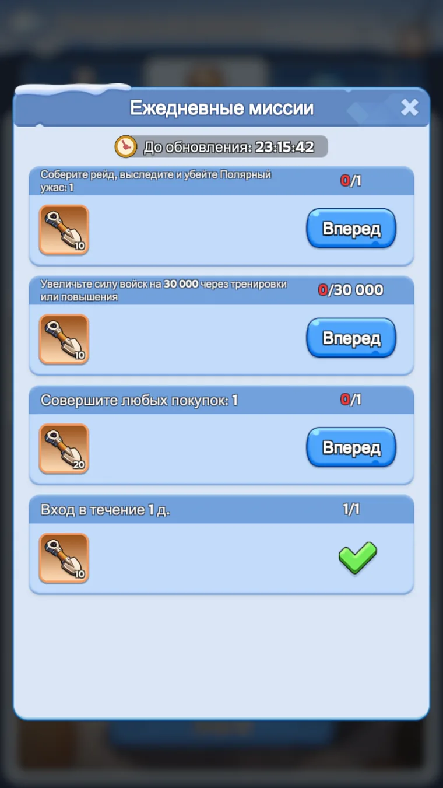
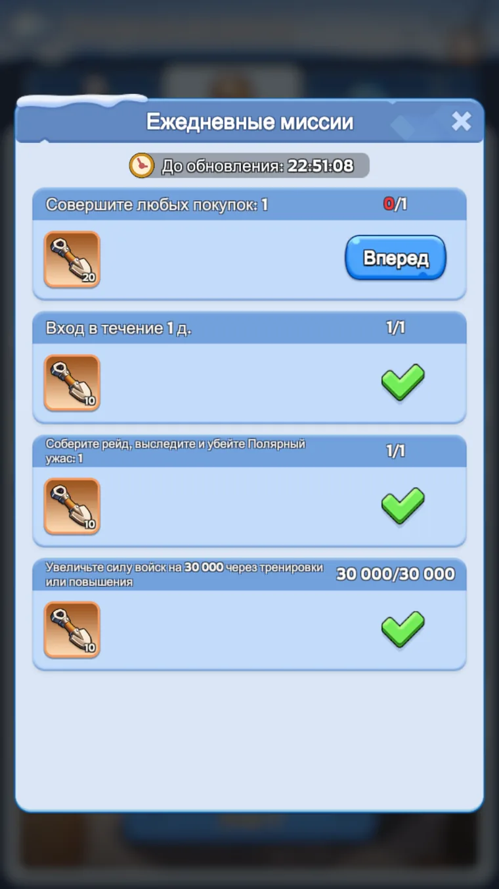
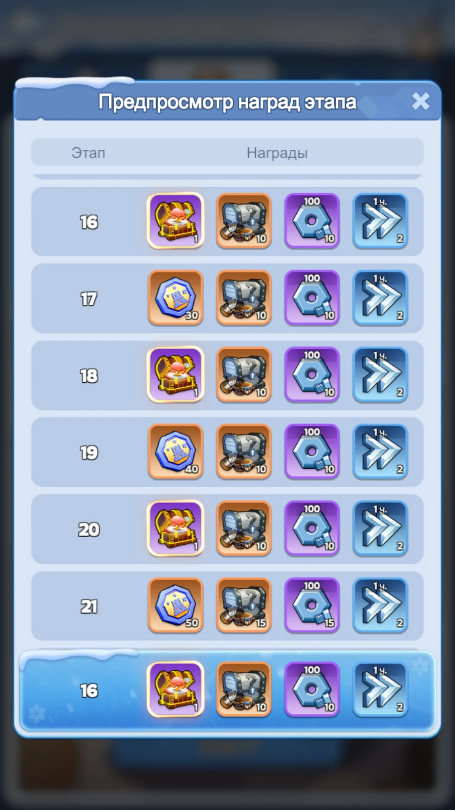
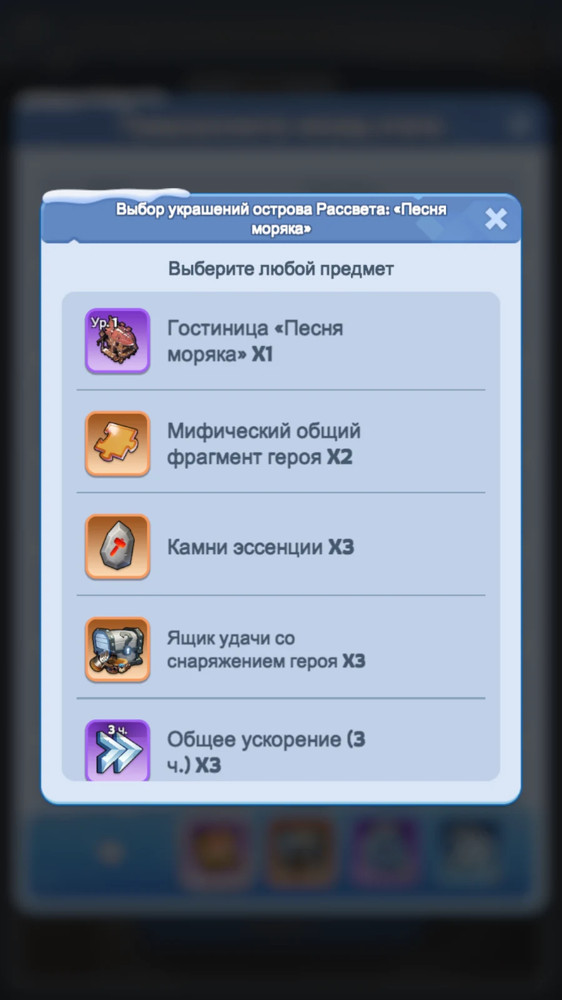
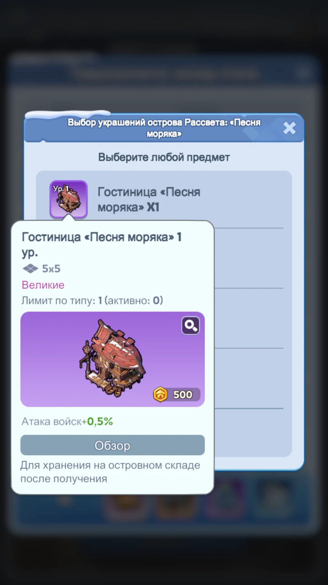
Как копать правильно
Длинные узкие предметы, широкие предметы и компактные силуэты занимают разные клетки. Уже на старте часть поля автоматически отпадает.
Если предмет не помещается по длине, не может пройти через уже выкопанную область или упирается в границу — эти клетки для него пустые по определению.
Лучше открывать клетки, которые пересекают сразу несколько допустимых размещений предмета, чем тыкать в глухой угол без ценности для развилки.
Освобождённые клетки убирают часть комбинаций для остальных силуэтов. На поздних этапах это особенно заметно.
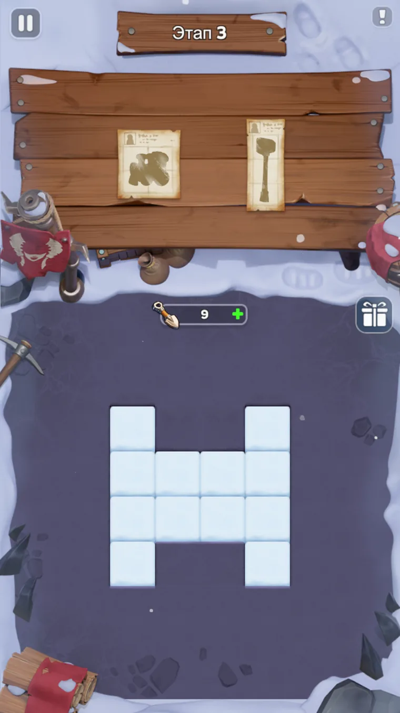
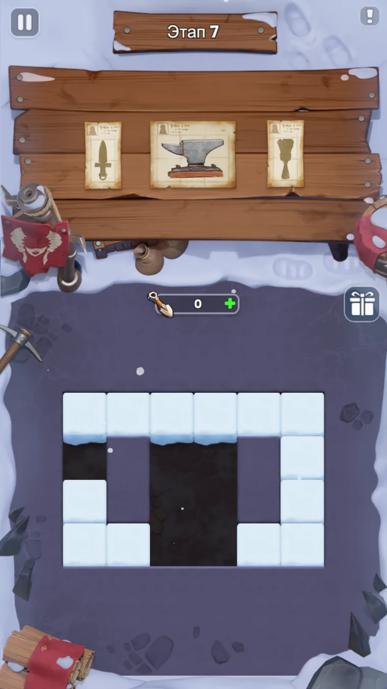
5. Фантазийная симфония
Это пазл-вкладка с дополнительными наградами. Логика простая: выполняем миссии, получаем кусочки, вставляем их в поле, забираем промежуточные сундуки и финальную награду за полный пазл.
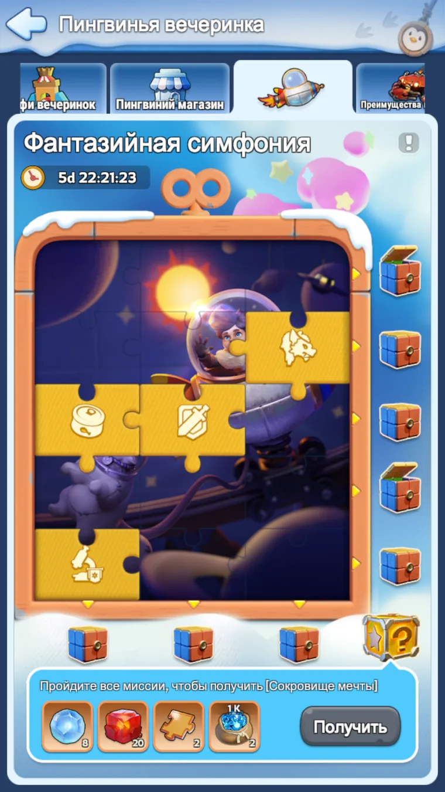
Особой скрытой математики здесь нет. Просто закрываем миссии без фанатизма и забираем всё, что даёт событие. Это побочный источник ресурсов, а не место, где нужно принимать сложные решения.
6. Пингвиний магазин
Именно сюда в итоге превращаются ваши броски. Ассортимент может немного отличаться по возрасту государства, поэтому универсальное правило такое: не тратим монеты сразу, а копим до конца и только потом покупаем нужный дефицит.
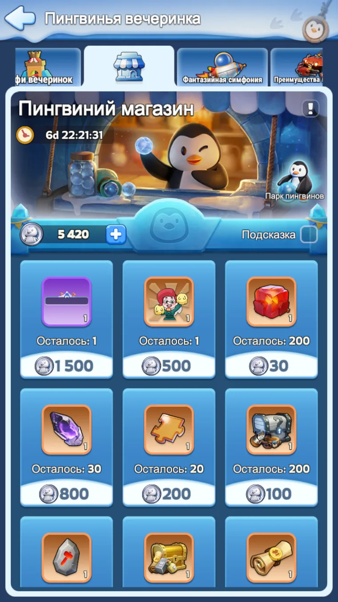
Монеты пингвина копим, а тратим в конце. За время события меняется понимание собственных потребностей: кому-то в итоге важнее пазлы, кому-то огненные кристаллы, кому-то редкие материалы. Ранние импульсивные покупки обычно хуже продуманной финальной траты.
Покупаем то, что действительно тормозит аккаунт прямо сейчас: редкие материалы, огненные кристаллы, пазлы, особые сундуки, руководства и прочее узкое место.
Если у вас есть цель на постоянный внешний вид, табличку, эмоцию или другой коллекционный предмет — закладываем это заранее, а не внезапно в конце.
Когда главный дефицит закрыт, добираем на остаток самый полезный универсальный ресурс.
7. Короткий план на ивент
- Каждый день закрываем основную активность события и забираем шарики, а в Ледяном взрыве не забываем про ежедневки.
- В Парке пингвинов держим в голове средний ориентир 70,4 монеты за шарик и не строим ожидания на единичных удачных бросках.
- Если берём пропуск за 479 ₽, делаем это в самом начале, чтобы не терять дополнительные 3 шарика в день и удвоенные ежедневные награды Ледяного взрыва.
- Во вкладке Потерянная добыча не копаем вслепую: смотрим на формы, вычёркиваем невозможные клетки и только потом тратим лопаты.
- Фантазийную симфонию просто добираем по пути — без отдельного форсажа.
- Монеты пингвина копим до конца, затем спокойно открываем магазин и покупаем именно то, что нужно аккаунту после всех расчётов.
Материал собран по текущим игровым скриншотам и ручному разбору вкладок события. Если локализация или мелкие цифры на вашем сервере немного отличаются, базовый приоритет остаётся тем же: считаем средние монеты, рано оцениваем выгоду пропуска и копаем лопатами по геометрии.